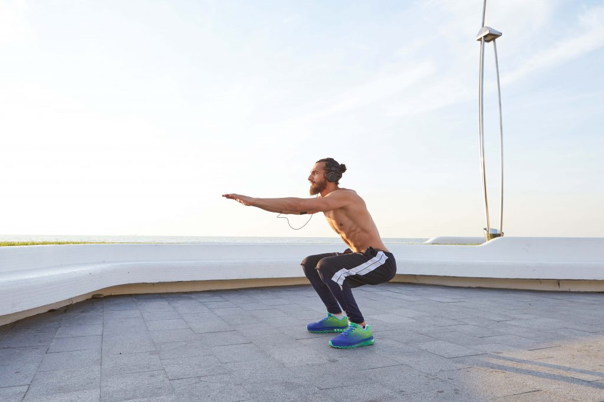
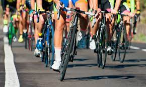
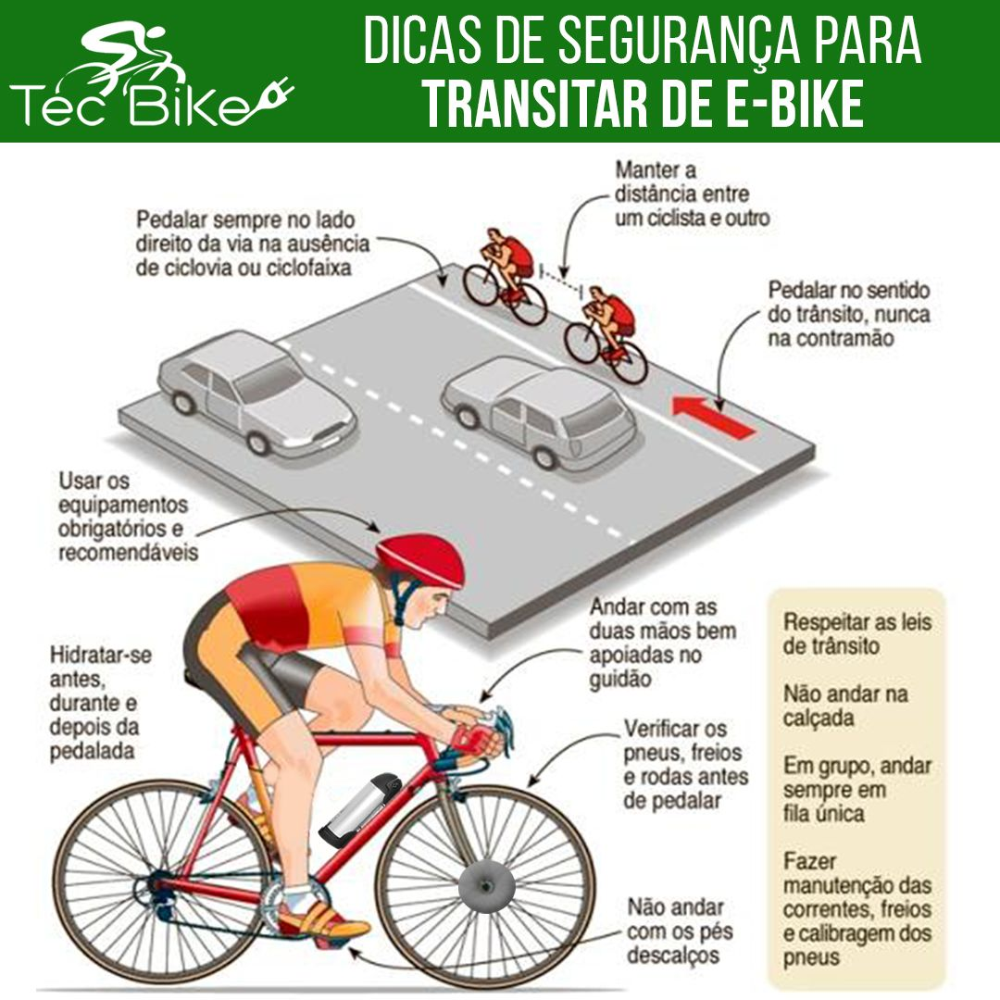

Para fazer um bom aquecimento antes de pedalar é importante você fazer alguns exercícios como: Agachamentos, abdominais, barra fixa, prancha e flexões
Ciclismo é uma atividade que envolve a repetição de um movimento e que usa como meio de locomoção a bicicleta. O ciclismo pode ser competitivo, recreativo e também praticado como forma de atividade física, tanto outdoor como indoor (como as aulas de spinning).
Alguns cuidados importantes para os ciclistas adotarem são: Usar capacete, cuidar da iluminação da bicicleta, não andar na contramão, usar as ciclovias e respeitar as leis de trânsito
